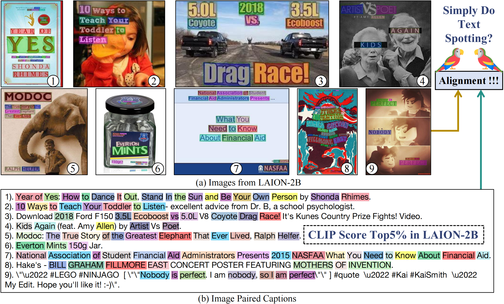

Captions in LAION-2B have a significant bias towards describing visual text content embedded in the images.
Released CLIP models have strong text spotting bias almost in every style of web images, resulting in the CLIP-filtering datasets inherently biased towards visual text dominant data.
CLIP models easily learn text spotting capacity from parrot captions while failing to connect the vision-language semantics, just like a text spotting parrot.
We provide a alternative solution by training a less biased filtered LAION-2B 100M subset and pre-trained CLIP models.
Overview

In LAION-2B, image-text pairs with the Top-5% highest similarity score are most dominant by visual text!
These samples have dense concurrent text appearing in captions and images (text form in pixels).
We refer to their captions as Parrot Captions as they raise a question: Dose CLIP Simply Parroting Text in Images for Vision-Language Alignment?
The concurrent text is spotted by the OCR model and highlighted with color in image-text pairs.
Profiling LAION-2B Data
We first do K-Means on the LAION-2B dataset and then use OCR model scan the whole dataset.
Surprisingly, we found that 50% of images contain embedded text content.
In the clusters with high text image ratio, the top CLIP score samples contain various text sources, such as posters, book covers, advertisements, TV show screenshots, and even PowerPoint slides.
Inspecting Pre-Trained CLIP Models
To answer better why LAION data contains such a high proportion of parrot captions,
we inspect the released CLIP models by ablating the embedded text using text inpainting.
The CLIP scores significantly drop once we remove the text from the images compared to
its random inpainting baseline.
It indicates that the parrot captions correlate highly with the CLIP score measurement.
Training CLIP on Emb. Text Curated Data
We dive deeper into the parrot captions by training CLIP models on LAION-2B subsets selected by
different embedded-text-oriented criteria under the same setting.
Results show that we can easily train a CLIP model with a strong text-spotting bias using data biasing to parrot captions.